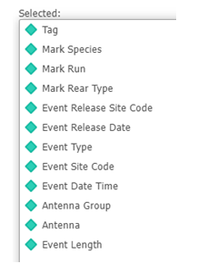
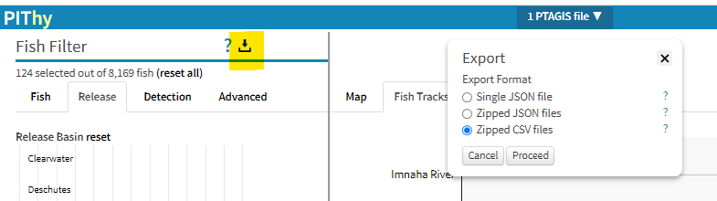

Required PTAGIS Attributes
Although the eventual goal for this tool is to be able to process results from several different PTAGIS query types, as well as many from DART, PIThy currently expects output files from PTAGIS Complete Tag History queries.
If you are now familiar with PTAGIS, it is first necessary to register as a user and enter the Advanced Reporting module.

Shown at left is an optimal set of attributes for a Complete Tag History query. PIThy is designed to work with results at the individual tag level (Tag attribute thus is mandatory), corresponding to a single fish with a known release date and time, and a series of events which are also tracked in time and location.
Many of the fish-specific attributes are not strictly required, including species, run, and rear type, but if the result set will include multiple types of these, including them will permit filtering by them in the tool. Length is also not required, but can be useful for certain analyses.
Loading Files/br> One or more local files can be loaded into PIThy by either dragging and dropping them into the target area on the start screen or by clicking on the link within the area and selecting with the system file chooser. If you wish to have associated environmental variables automatically loaded from DART, check that checkbox before loading files.
Saving Files
To export data and metadata from PIThy, click on the download icon at top of the FishFilter (as shown below, highlighted in yellow). A window will appear to the right offering a choice between formats. Only the (fish) data chosen using the FishFilter is prepared for the export.

More help is on the way...
PIThy is a browser-based tool for processing PITtag data collected and maintained by PTAGIS.
PIThy is currently in an early development stage and feedback is welcome. This project is funded by the Bonneville Power Administration.

| Event Date Range: |
|
|||||
| Event Types: |
Mark
Release
Observation Recapture Recovery Passive Recovery |
|||||
| Pie Slice Mode: | fish/event attributes environmental metrics | |||||
| Event Variable: | Enviro Variable: | |||||
| Pie Palette: | ||||||